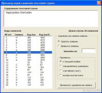
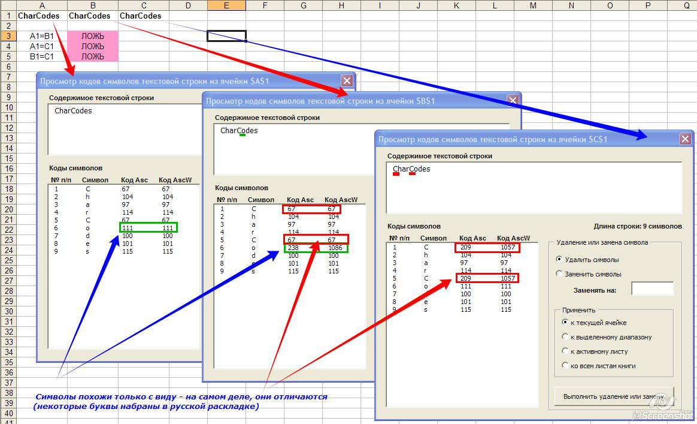

|
 Надстройка предназначена для быстрого просмотра кодов символов текста, введённого в ячейку. Порой бывают ситуации, когда формулы поиска и сравнения выдают неожиданный результат - одинаковые с виду ячейки для формул оказываются разными. И вот в этих случаях на помощь приходит эта надстройка. С её помощью вы быстро обнаружите, что в похожих ячейках одни и те же буквы набраны в разных раскладках или в разных кодировках, а также сможете отличить обычный пробел (с кодом 32) от неразрывного (с кодом 160). Пользоваться надстройкой очень просто - выделите ячейку, содержащую анализируемый текст, и нажмите комбинацию клавиш Ctrl + Alt + Shift + C При выделении на форме результатов позиции с кодом символа - этот символ подсвечивается (выделяется синим) в поле с содержанием текстовой строки. Можно открыть сразу несколько окон просмотра - выделяйте различные ячейки, и для каждой из них нажимайте вышеозвученную комбинацию на клавиатуре:  Надстройка не доработана - функции замены символов (к примеру, замену выделенного символа - неразрывного пробела - на обычный) пока не реализованы. Возможно, позже доделаю недостающий функционал (если кому-то он понадобится - пишите в комментариях)
|